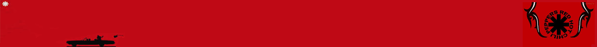

RED HOT CHILI PEPPERS

![[Valid RSS]](https://www.onepointsync.com/wp-content/uploads/2016/08/valid-rss-rogers.png "Validate my RSS feed")
Red Hot Chili Peppers es una banda de funk rock estadounidense formada en 1983 en Los Ángeles, California. Sus integrantes son, el vocalista Anthony Kiedis, el guitarrista John Frusciante, el bajista Flea y el baterista Chad Smith. El estilo musical de la banda fusiona el funk tradicional con el rock y el rock alternativo incluyendo elementos de otros géneros como el rap, pop rock, heavy metal, dance, punk, hip hop e indie rock. Aunque en algunos sitios son considerados los inventores del punk funk, en realidad son los que hicieron esta fusión (inventada por el neoyorquino James Chance) masiva y exitosa comercialmente.
El núcleo de la banda fue formado en la preparatoria Fairfax High School como Anthym con el chileno Alain Johannes como vocalista. Anthony Kiedis, quien estuvo haciendo una pequeña carrera como actor juvenil televisivo bajo el apodo de Cole Dammett, solía ser su presentador y "hypeman". En febrero de 1983, Anthony fue pedido por su amigo Gary Allen de la banda Neighbour's Voices para que lo teloneara junto a sus amigos.
Bajo la influencia principal de las bandas neoyorkinas Defunkt y Grandmaster Flash & The Furious Five,armaron una banda para la ocasión con el nombre de "Tony Flow and the Miraculously Majestic Masters of Mayhem".El rendimiento en vivo de la banda fue tan bueno que se les pidió regresar la semana siguiente. Debido a este inesperado éxito, los miembros de la banda cambiaron el nombre por el de Red Hot Chili Peppers, debido a que vieron el nombre original un poco incómodo.Luego siguieron tocando en varios conciertos por clubes de Los Ángeles y cabarets como el Kit Kat Club. Es en estos primeros momentos cuando empiezan a hacerse populares por sus actuaciones en las que aparecían completamente desnudos, con solo un calcetín en los genitales (Sock on Cock). Seis de las canciones que tocaban en esos shows fueron grabadas en su primer demo.
«Californication» es una canción del grupo musical Red Hot Chili Peppers incluida en su séptimo álbum de estudio, Californication de 1999 y posteriormente lanzada como cuarto sencillo de este en mayo de 2000. Es una de las canciones más conocidos de la banda, siendo interpretada en casi todos sus recitales. Es fácilmente reconocible por la mezcla de guitarra y bajo en su introducción y su video musical.
«Californication» ocupa el puesto #274 de "Las 1000 mejores canciones de siempre" de la revista Q Music. Además ocupa el puesto #44 de "Las 100 Grandiosas Canciones de los 2000's en inglés" del canal VH1 en un conteo regresivo hecho en el año 2011 y fue nominado a 5 premios de los MTV Video Music Awards en el año 2000 incluyendo Vídeo del Año, del cual solo ganó Mejor Dirección Artística y Mejor Dirección, y fue nominada a Dos premios Grammy en el año 2001 como "Mejor Interpretación Rock de un Dúo o Grupo con Vocalista" y "Mejor Canción de Rock".